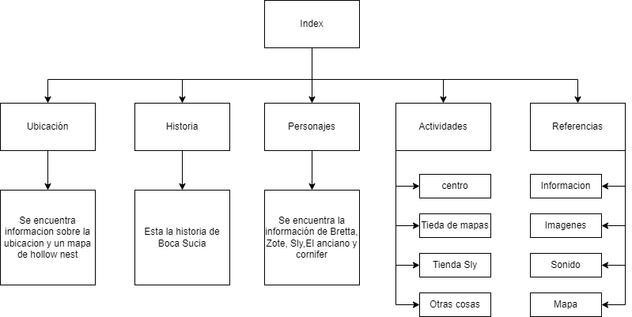

Ubicación
Historia
Personajes
Actividades
Referencias
Boca Sucia
informacion
imagenes
sonido
Mapa
Referencias
Informacion
https://hollowknight.fandom.com/wiki/Hollow_Knight_Wiki
https://hollowknight.fandom.com/es/wiki/Lore
https://www.korosenai.es/videojuegos-indie/hollow-knight/lore-pasado-hallownest/
imagenes
Algunas iamgenes son de mi autoria tomadas dentro del juego, Andres Felipe Betancurth Becerra
https://www.kickstarter.com/projects/11662585/hollow-knight
https://hollowknight.fandom.com/es/wiki/Sly
https://www.korosenai.es/videojuegos-indie/hollow-knight/zote/
sonido
Musica por christopher larkin para hollow knight
Mapa
